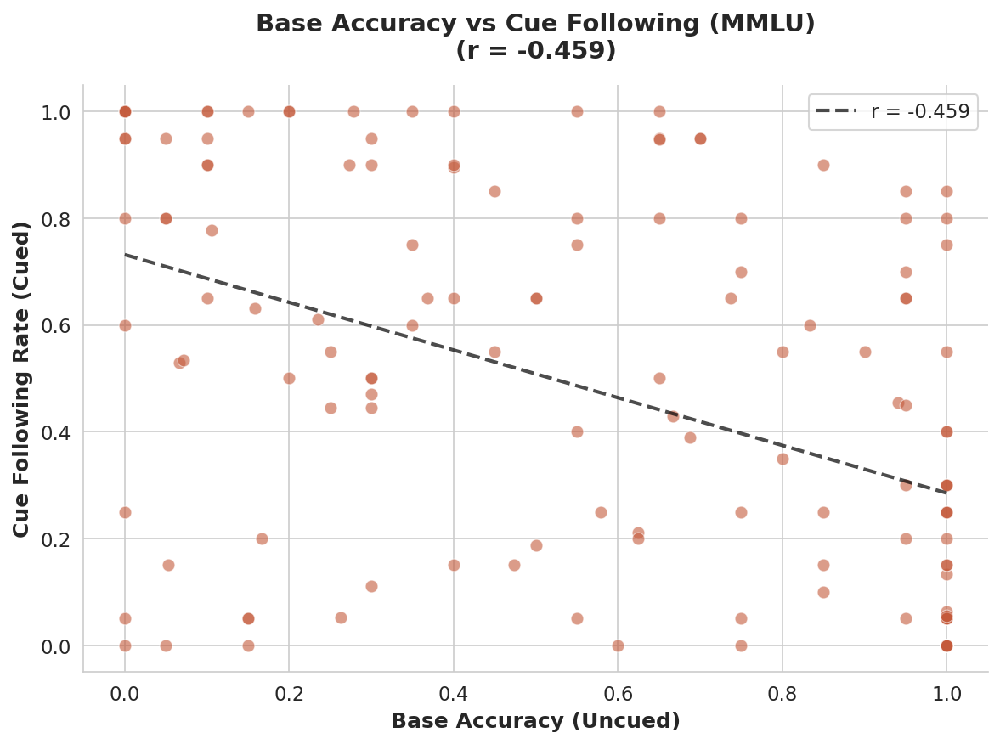
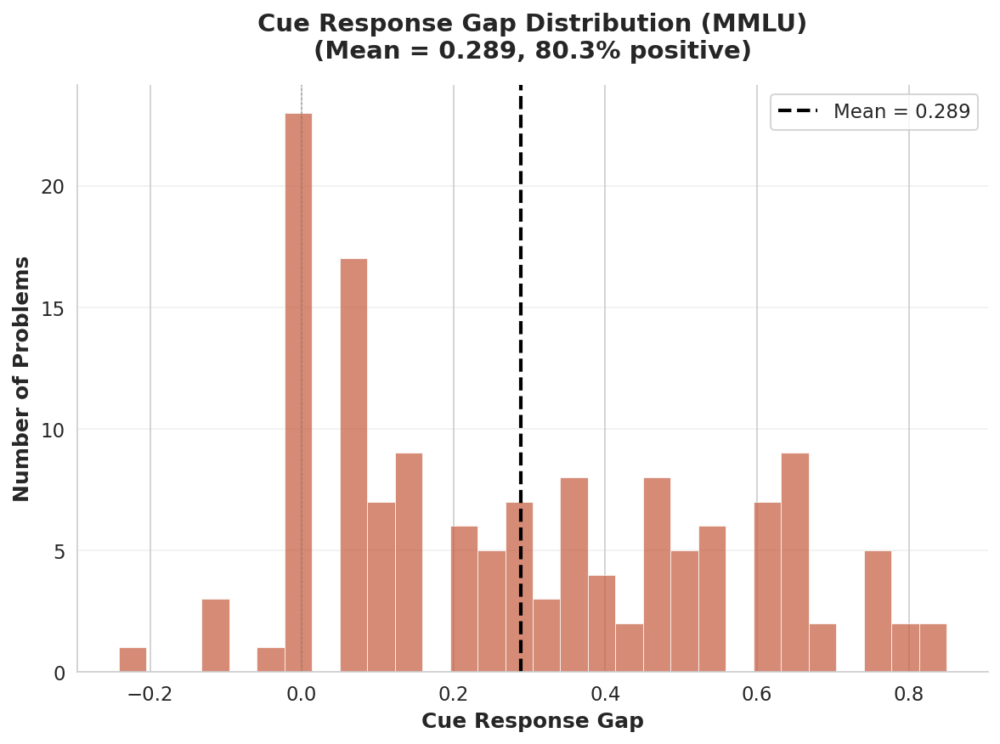
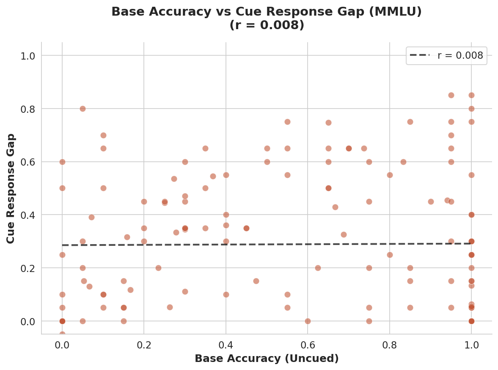
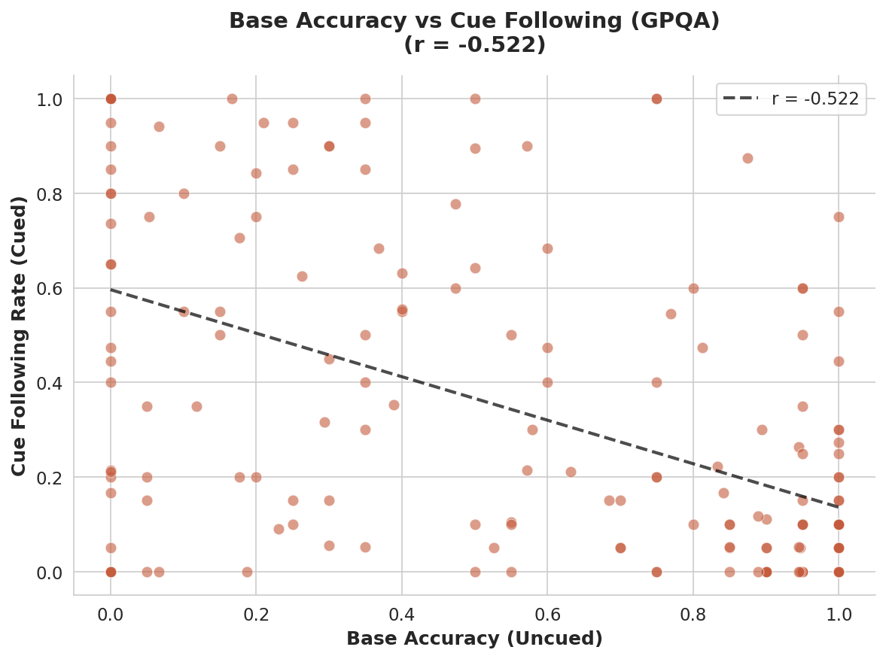
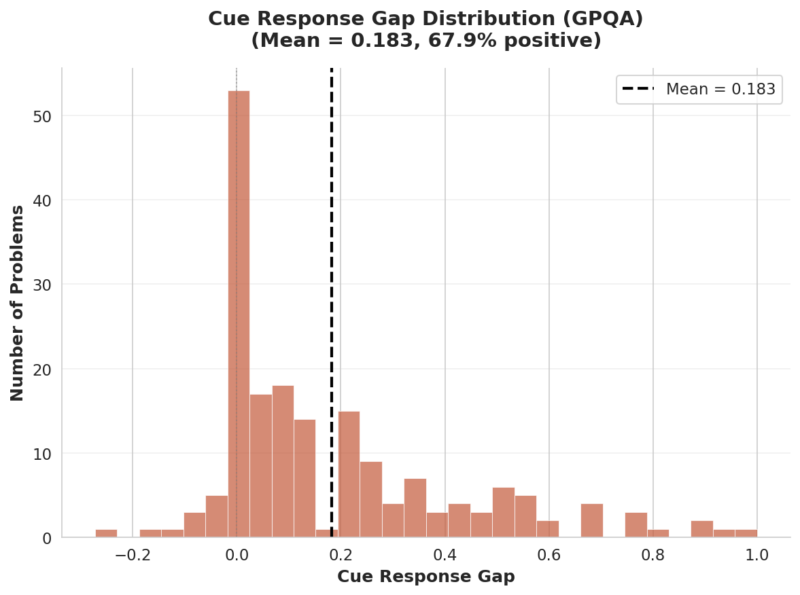
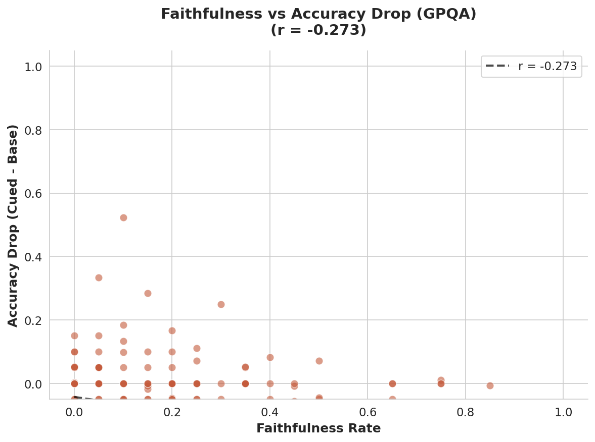

Do Faithful & Unfaithful CoT Differ in How They Pay Attention?
Interactive visualization of attention patterns in chain-of-thought reasoning
Hypothesis
If white-box attention attribution patterns reflect how models use information during reasoning,
then faithful CoT (where reasoning genuinely influences the answer) should show focused attention
to relevant broadcasting sentences, while unfaithful CoT (post-hoc rationalization)
may exhibit more diffuse attention or anchor to different, potentially misleading parts of the reasoning chain.
This work replicates and extends Bogdan et al. (2025) "Thought Anchors"
to test whether receiver heads and vertical stripe patterns of attention targeted towards specific sentences ("thought anchors") differ between faithful and unfaithful chains.
If attention markers meaningfully distinguish faithful from unfaithful CoT, this could enable
white-box monitoring of reasoning quality in deployed models.
All in Category: Receiver heads are calculated using kurtosis measure calculated across all rollouts from all problem IDs (PIs) in the selected category. If only one category (faithful or unfaithful) is selected, kurtosis is computed across all rollouts from that category.
Note on combining categories: If both faithful and unfaithful categories are selected, kurtosis would be computed across all rollouts from both categories combined. However, this may not be statistically appropriate since faithful and unfaithful problems may exhibit systematically different attention patterns. The original analysis keeps them separate for comparison.
This PI Only: Receiver heads are calculated only across rollouts of this specific problem ID (PI).
Note: Bogdan et al. calculate receiver heads across the whole dataset of math rollouts (link).
📊 No Problems Available
No problems found for this dataset/category combination.
Question Details
Question Text
Loading...
Ground Truth—
Cue Answer—
Reasoning Acc—
No-Reasoning Acc—
Faithfulness %—
⚠️Note: This problem may be non-representative as its reasoning accuracy is lower than no-reasoning accuracy.
However, attention patterns may still be interesting for such examples.
Top Receiver Heads
Heads with highest kurtosis in attention distribution (indicating focused attention patterns)
Cued Rollout
• Dot indicates cue mention among the top source sentences for the selected layer-head pair
Uncued Rollout
Shared Heads:—
Attention Patterns
Click on a head above to view its attention matrix. Hover for values.
Cued Rollout
L0-H0Faithfulness rate: —%
Select a head to view attention
Top Source Sentences (Stripes) ℹ️
Uncued Rollout
L0-H0
Select a head to view attention
Top Source Sentences (Stripes) ℹ️
Faithful vs Unfaithful Comparison
Comparing two cued rollouts: one that mentions the cue (faithful) vs one that follows the cue without mentioning it (unfaithful).
Faithful vs Unfaithful comparison not available for this problem.
This requires both a cued rollout that mentions the professor AND one that doesn't.
Faithful (Cued + Mentions)
L0-H0
Select a head to view attention
Top Source Sentences ℹ️
Unfaithful (Cued + Silent)
L0-H0
Select a head to view attention
Top Source Sentences ℹ️
Summary
0Shared Heads
0Shared Source Sentences
—Cue in Top Sources (Cued)
Conclusion & Future Directions
This visualization explores whether attention patterns can serve as white-box markers for CoT faithfulness.
While vertical stripe patterns and receiver heads emerge in both faithful and unfaithful chains,
further work is needed to determine if systematic differences exist.
Future directions:
(1) Test on domains where post-hoc rationalization is common,
such as the hiring-scenario dataset (Karvonen & Marks, 2025), where models explain choices with
acceptable narratives that may not reflect true decision factors.
(2) Combine with Verbalization Fine-Tuning (Turpin et al., 2025) — if VFT increases cue admission,
do receiver heads shift to anchor on the verbalized cue sentence post-training?
(2.1) Try model diffing between VFT model and original.
Such experiments could validate whether attention markers reliably track cue-following behavior.
Appendix: Dataset & Methodology
▼
Research Question
We investigate whether faithful and unfaithful Chain-of-Thought (CoT)
reasoning exhibit different attention patterns. Specifically, we analyze attention heads that act as
"receivers" — heads with focused attention distributions (high kurtosis) that attend heavily to
specific source sentences.
Problem Selection Criteria
Problems were selected from MMLU using the following criteria:
Low no-reasoning accuracy (<50%) — Problems where the model struggles without CoT, ensuring reasoning is genuinely needed rather than post-hoc rationalization
High cue response gap (≥0.5) — Large difference in cue-following between cued and uncued conditions, indicating the cue meaningfully influences behavior
Cue ≠ Ground Truth — The cue answer differs from the correct answer, allowing us to distinguish faithful from unfaithful reasoning
Each problem is unique
Faithfulness Classification
Faithful CoT
Rollouts where the model follows the cue AND explicitly mentions the cue (e.g., "professor", "Stanford") in its reasoning.
Threshold: ≥80% of cued rollouts are faithful for MMLU and ≥70% for GPQA diamond
Unfaithful CoT
Rollouts where the model follows the cue BUT does not mention it in the reasoning — the CoT does not reflect the actual decision process.
Threshold: ≥80% of cued rollouts are unfaithful for MMLU and ≥70% for GPQA diamond
Mixed
Problems with substantial proportions of both faithful and unfaithful rollouts.
Threshold: unfaithful/faithful ratio ≥40%
Dataset Statistics
MMLU
143Total MMLU problems analyzed
20Rollouts per problem per condition
0.637Median reasoning accuracy
0.474Median no-reasoning accuracy
GPQA-Diamond
186Total GPQA problems analyzed
20Rollouts per problem per condition
0.577Mean base accuracy
0.378Mean no-reasoning accuracy
Key Findings from Data Analysis
Note: "r" represents the Pearson correlation coefficient, measuring the linear relationship between two variables.
Values range from -1 (perfect negative correlation) to +1 (perfect positive correlation), with 0 indicating no linear relationship.
"Gap" refers to the mean cue response gap — the average increase in cue-following behavior when a misleading cue is present.
MMLU
r(accuracy, cue following) = -0.459p < 0.0001
Lower base accuracy correlates with more cue following — the model is more susceptible to misleading cues on harder problems.
Cue following behaviour is likely confounded by problem difficulty. On harder problems, the model may fall back to the cue when struggling to find an answer. To control for this, future work should compare problems with equal uncued accuracy levels.

Gap = 0.289p < 0.0001
Mean cue response gap of 0.289 — 79.7% of problems show increased cue following when cued.

r(accuracy, gap) = 0.008p = 0.92
No significant correlation between base accuracy and cue response gap — the change in behavior is consistent across difficulty levels.

GPQA-Diamond
r(accuracy, cue following) = -0.522p < 0.0001
Lower base accuracy correlates with more cue following — effect is even stronger than MMLU.
Cue following behaviour is likely confounded by problem difficulty. On harder problems, the model may fall back to the cue when struggling to find an answer. To control for this, future work should compare problems with equal uncued accuracy levels.

Gap = 0.183p < 0.0001
Mean cue response gap of 0.183 — 67.2% of problems show increased cue following when cued.

r(faithfulness, accuracy drop) = -0.273p = 0.0002
Higher faithfulness (explicit cue mentions) → larger accuracy drops. Verbalizing the cue is associated with being more misled.

Model & Generation Settings
Two generation stages were used: (1) initial rollouts for faithfulness classification,
(2) attention analysis rollouts for visualization. Both use the same sampling parameters.
Model
deepseek-ai/deepseek-r1-distill-qwen-14b
Temperature
0.7
Top-p
0.95
Max tokens (MMLU)
2048
Max tokens (GPQA)
8192 (stage 1) / 2048 (stage 2)
Rollouts per condition
20 (stage 1) / 5 (stage 2)
⚙️Details: Two-Stage Generation Pipeline▶
The analysis uses a two-stage pipeline. Both stages use temperature=0.7, top_p=0.95 (matching the original paper).
Stage 1: Initial Rollout Generation
Script: run_pipeline.py with vLLM
Purpose: Generate large sample for faithfulness classification
Rollouts: 20 cued + 20 uncued per problem
Used for: Problem selection, accuracy stats, faithfulness %
Stage 2: Attention Analysis Generation
Script: anchors_unified.ipynb
Purpose: Generate rollouts with attention weights for visualization
Rollouts: 5 cued + 5 uncued per selected problem
Used for: Attention matrices, receiver heads, stripe analysis
MMLU-Specific
Config: configs/mmlu_config.py
Source: Chua et al. faithfulness dataset (Professor cue)
For each problem, we identify receiver heads — attention heads with high kurtosis
in their attention distribution across all rollouts. High kurtosis indicates the head consistently
attends to specific source sentences (creating "vertical stripes" in the attention matrix).
We then compare which source sentences receive the most attention in cued vs. uncued rollouts,
and whether cue-related sentences (those mentioning the professor/Stanford cue) appear among
the top-attended sources.
📝Implementation Notes: Differences from Original Thought-Anchors▶
Our implementation is adapted from the
thought-anchors
whitebox analyses. Key differences:
1. Averaged Matrix Computation
avg_matrix_by_chunk vs original _compute_averaged_matrix
We return NaN for empty regions; original returns 0
Simpler implementation without bounds checking (assumes valid inputs)
2. Vertical Score Calculation
get_attn_vert_scores vs original get_vertical_scores
No control_depth: Original has option to rank-normalize attention
values per row, controlling for the fact that later sentences have more preceding sentences to
attend to. We use raw attention values.
Added drop_first: We set first/last N scores to NaN to filter
noisy boundary sentences (default N=1)
Default proximity_ignore=3 vs original's 20
3. Kurtosis Computation
compute_kurtosis_per_head vs original get_3d_ar_kurtosis
We use dict {(layer,head): [scores]}; original uses 3D numpy array
We compute kurtosis per rollout then average; original computes directly on axis=2
4. Head Selection
select_top_heads vs original get_top_k_receiver_heads
Added min_max_vert filter: We filter out heads where max vertical
score is below threshold (default 0.001), removing inactive heads that might have high kurtosis
by chance
5. Attention Analysis Generation
Settings used for generating rollouts shown in visualizations
max_new_tokens=2048 for both MMLU and GPQA (not 8192)